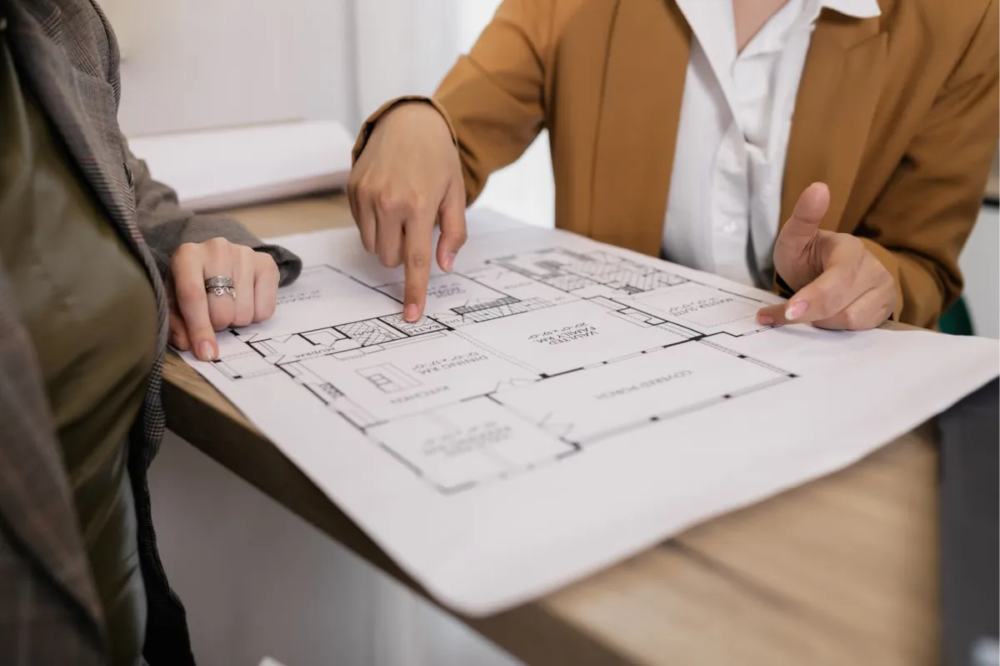
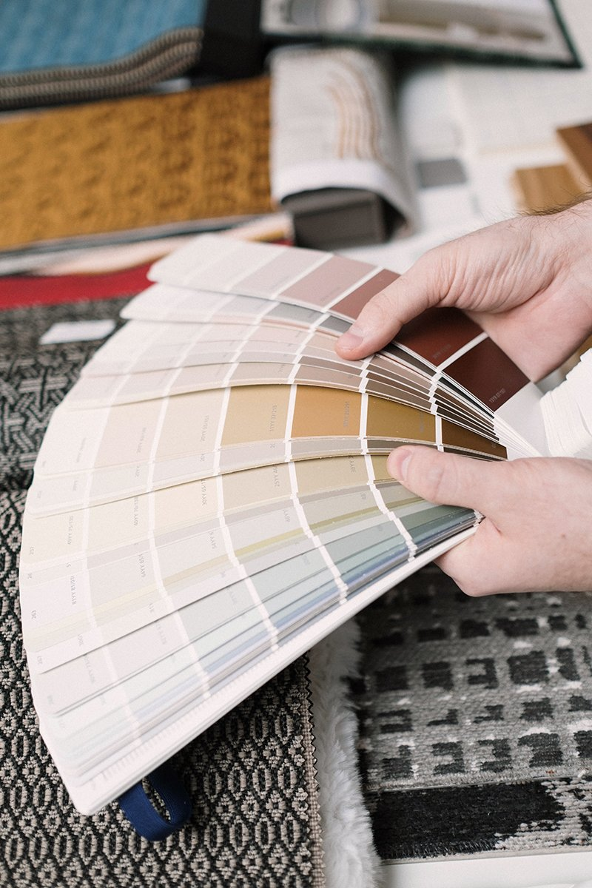
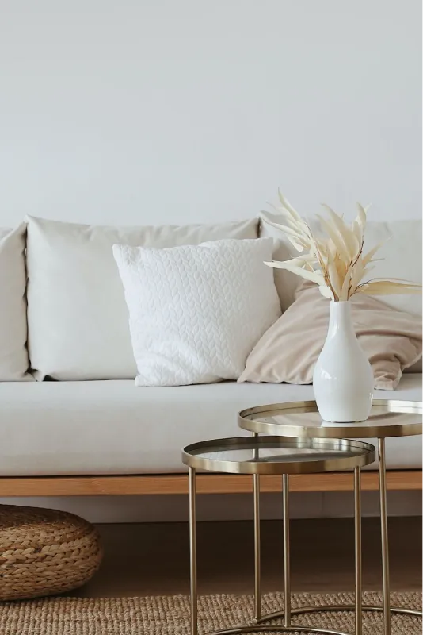

Step 1. Initial consultation
During this session, we take the time to get to know each other and discuss the project goals, inspiration, budget, timeline, and any special considerations.
During this session, we take the time to get to know each other and discuss the project goals, inspiration, budget, timeline, and any special considerations.

Following the initial consultation, we develop a design proposal detailing the scope of services, estimated costs, and project timeline.

We develop a thoughtful and creative design solution. This includes selecting materials and finishes, developing drawings, and exploring concepts.

This phase includes ordering product, coordinating with contractors, and overseeing installation. We take pride in ensuring that the process runs smoothly.